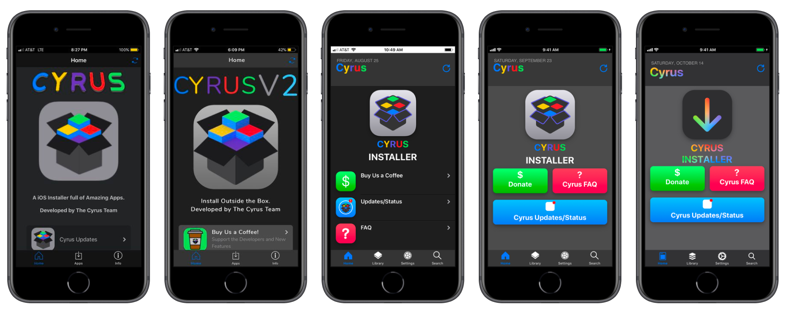
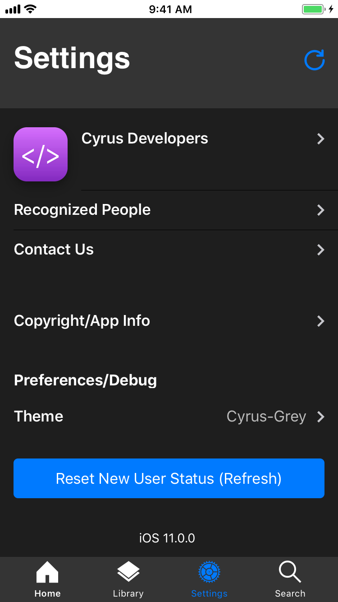
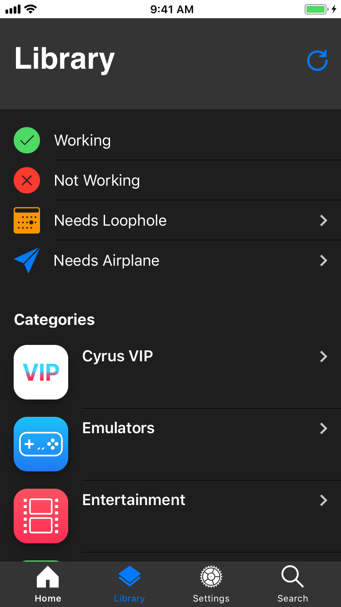

< Back
From 2016 to early 2019, I worked on the interface
& features of an app store with my online friend.
The site was a fake mobile app - it was only accessible from
an iphone app which was literally a disguised Safari window.
This app store provided downloads of cracked & non-Apple App Store apps,
all of which my friend had found from other places.
The real service this site offered was making these apps more accessible to
more people - before Cyrus, you had to jailbreak your iphone
to install anything like these apps, or use shady download websites
which had popups & unclear instructions.
Using Cyrus, your phone could remain non-jailbroken
& virus-free but still run cracked apps.
Eventually the site gained enough popularity that we needed to take donations/run ads
to pay for a server & compensate ourselves.
My friend controlled the money, but he never paid me and
it got to the point where it felt like a waste of my time so I quit.
Cyrus screenshots:


